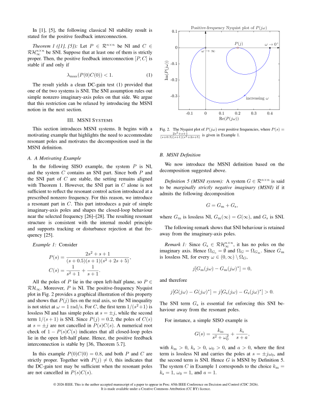
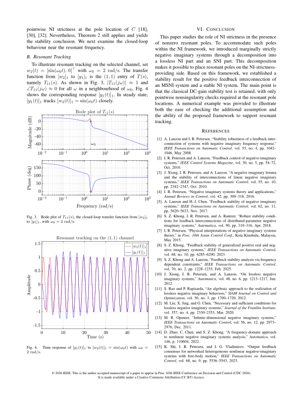
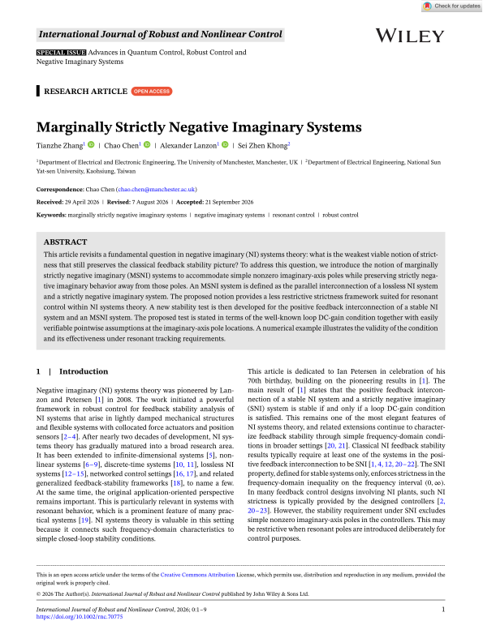
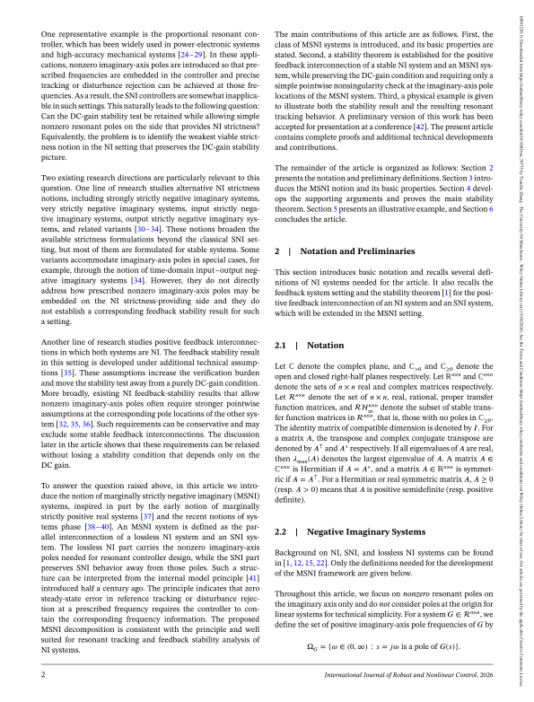
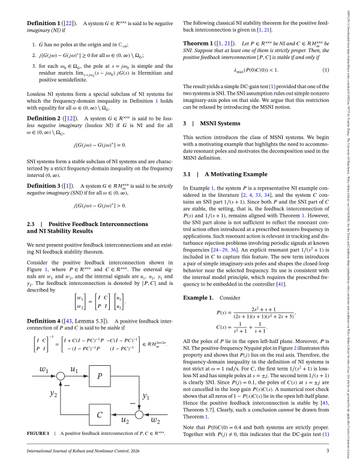
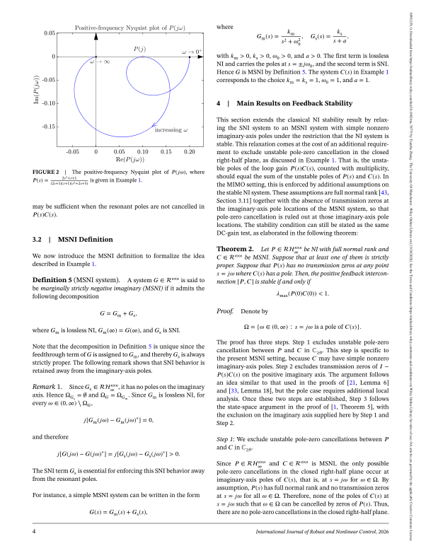
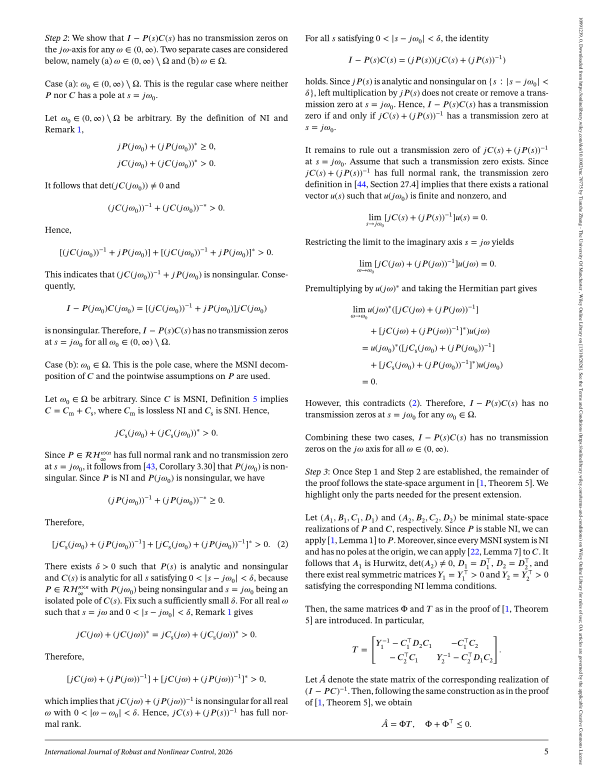
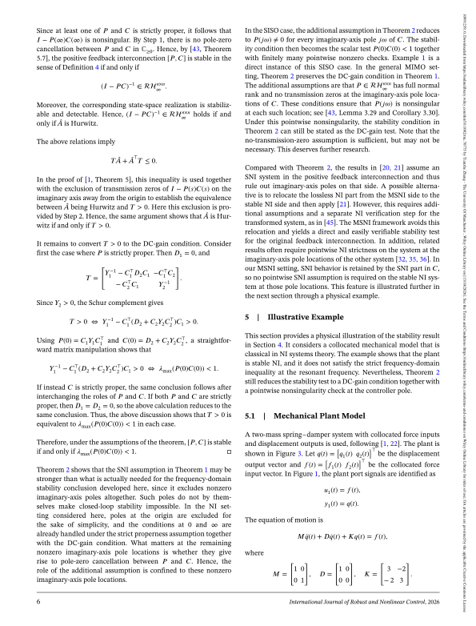
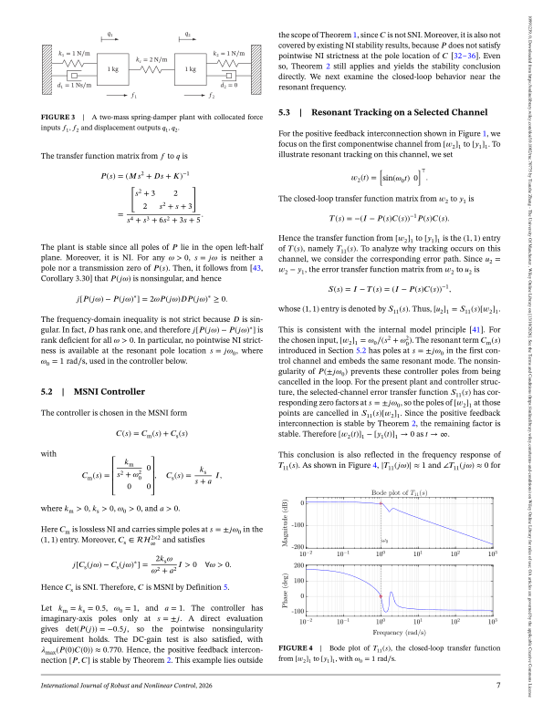
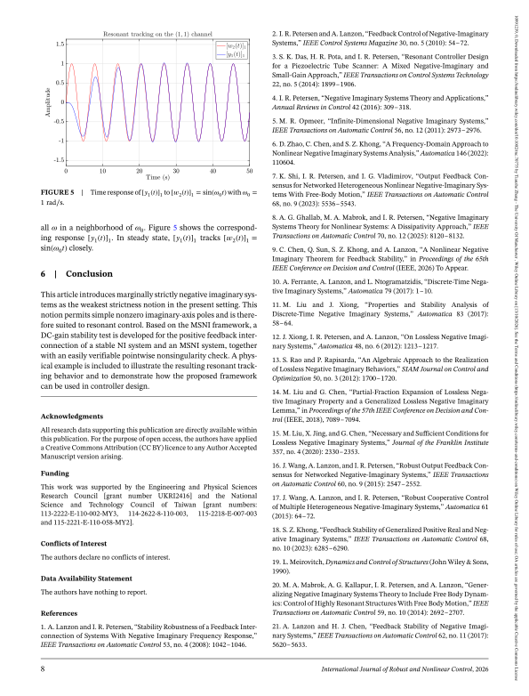

On the Strictness of Negative Imaginariness for Linear Systems (IEEE CDC 2026)


Marginally Strictly Negative Imaginary Systems (International Journal of Robust and Nonlinear Control, 2026)







